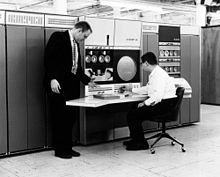

Third Generation Computer
Introduction of the time period
The period of third generation was from 1965-1971. The computers of third generation used Intergrated Circuits(ICs) in place of transistors. A single IC has many transistors,resistors and capacitors along with
the associated circuitry. The IC was invented by Jack Kilby. this development made computers smaller in size,reliable and efficient. In this generation remote processing,time-sharing,multi-programming operating system were used. High-level languages (FORTRAN-2 TO 4,COBOL,PASCAL PL/1,
BASIC,ALGOL-68etc.) were used during this generation.
Link for You Tube
Basic features of the generation
- IC used
- More reliable in comparison to previous two generations
- Smaller size
- Generated less heat
- Faster
- Lesser maintenance
- Costly
- AC required
- Consumed lesser electricity
- Supported high level language
- Consumed lesser electricity
- Supported high level language
Popular computing devices of the generation
- IBM-360 series
- Honeywell-6000 series
- PDP (Persoanl Data Processor)
- IBM-370/168
- TDC-316

Charactertistics of Third Generation of Computers
- Use of intergrated Circuits(IC) instead of transistors
- Use of Semi-conductor memory
- Small size than previous generation computers
- use of magnetic storage devices
- Improved faster operations and more dependable output
- Use of mini computers
- Use of monitors and line printers
- Use of high level programming languages
- Less expensive than 2nd generation computers
- Less expensive maintenance cost